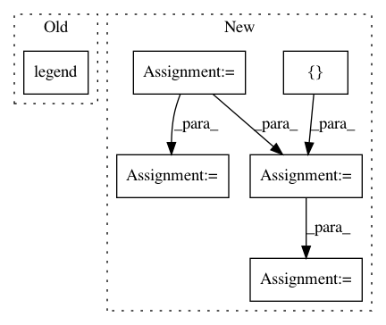

e8b2e17f4eec658f6a6d53486dbbe3eac48bb0fa,pyinterpret/core/global_interpretation/partial_dependence.py,PartialDependence,_plot_2d_2_binary_feature,#PartialDependence#Any#Any#Any#Any#Any#Any#,619
Before Change
ax.set_xlabel(feature1)
ax.set_ylabel("Predicted {}".format(class_name))
handles, labels = ax.get_legend_handles_labels()
ax.legend(handles, labels)
return flatten([figure_list, axis_list])
def _plot_2d_1_binary_feature_and_1_continuous(self, pdp, binary_feature,
non_binary_feature, pdp_metadata,
After Change
class_col_pairs, with_variance=False):
figure_list, axis_list = [], []
sd_col = pdp_metadata["sd_col"]
std_error = pdp.set_index([feature1, feature2])[sd_col].unstack()
for class_name, mean_col in class_col_pairs:
f = plt.figure()
ax = f.add_subplot(111)
//feature2 is columns
//feature1 is index
plot_data = pdp.set_index([feature1, feature2])[mean_col].unstack()
plot_data.plot(ax=ax, color=COLORS)
if with_variance:
colors = cycle(COLORS)
binary1_values = plot_data.index.values
binary2_values = plot_data.columns.values
for binary2_value in binary2_values:
color = next(colors)
yerr = std_error[binary2_value].values
In pattern: SUPERPATTERN
Frequency: 3
Non-data size: 6
Instances
Project Name: datascienceinc/Skater
Commit Name: e8b2e17f4eec658f6a6d53486dbbe3eac48bb0fa
Time: 2017-03-30
Author: aikramer2@gmail.com
File Name: pyinterpret/core/global_interpretation/partial_dependence.py
Class Name: PartialDependence
Method Name: _plot_2d_2_binary_feature
Project Name: datascienceinc/Skater
Commit Name: e8b2e17f4eec658f6a6d53486dbbe3eac48bb0fa
Time: 2017-03-30
Author: aikramer2@gmail.com
File Name: pyinterpret/core/global_interpretation/partial_dependence.py
Class Name: PartialDependence
Method Name: _plot_2d_1_binary_feature_and_1_continuous
Project Name: streamlit/streamlit
Commit Name: 289da8733f1d0faa48c30867093f944da839e341
Time: 2019-09-28
Author: treuille@users.noreply.github.com
File Name: lib/streamlit/hello.py
Class Name:
Method Name: data_frame_demo